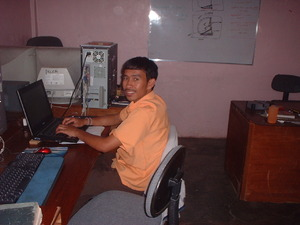

lingì 
/liŋiʔ/
v_rt.
“shake_head”
vi.
for someone or something (eglingì, miglingì/inlingì, agent, eg><ø-) to turn their head (eglingien, miglingì/inlingì/piglingì, patient, eg><en-) at their sides (eglingian, miglingian/inlingian/piglingian)
Kenè ka ma eglingì te minsan hendei ke eggipanew ka su egpakasipè ka te batu.
Don't always turn your head while walking for you to not commiting a wrong step.
Eng. turn head; head, turn
Ceb. lingì
OCM: Gestures and Signs (201)
Online dict status: -
Usage level: M
vi.
for someone or something (eglingi-lingì, miglingi-lingì/inlingi-lingì, agent, eg><ø-rdpRT-) to shake the head (eglingi-lingien, miglingi-lingì/inlingi-lingì/piglingi-lingì, patient, eg><en-rdpRT-) from side to side (eglingi-lingian, miglingi-lingian/inlingi-lingian/piglingi-lingian, location, eg><an-rdpRT-)
Kenè ka eglingi-lingì su egpakalipung kuna sika.
Don't shake your head side to side because it will cause you to be collapsed.
Syn. keleng
Syn. lengey
Eng. shake head side to side
Tag. umilíng
Ceb. lingùlingò
Ilo.: agwingíwing
OCM: Gestures and Signs (201)
DDP: No, not (9.4.6.1)
Online dict status: -
Usage level: M
Updated by: RJH,QDL
Last updated: 23/Jun/2010
"Palingia" in healthbook "Ka an-anayan ne peg-uyamu ni Lolita te mig-anak"
"pegpalingi" in healthbook "Ka an-anayan ne peg-uyamu ni Lolita te mig-anak"
This page last updated: 28-Dec-2019
Copyright © 2009-2014, Matigsalug Language Christian Association, Inc